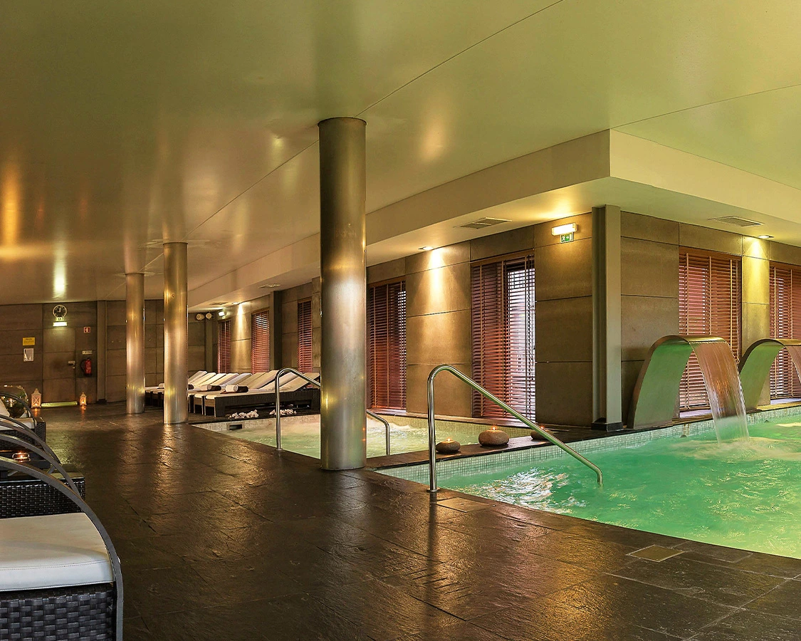

O Nosso Alojamento
No coração do Alentejo, o Monte do Crato oferece uma experiência onde o tempo para. Combinamos a sofisticação de um alojamento moderno com a alma de uma herdade viva, onde a terra e o bem-estar caminham de mãos dadas.

Privacidade & Conforto
Dispomos de 12 casas T2 geminadas, desenhadas para famílias que procuram o silêncio absoluto da planície.
Para momentos mais íntimos, os nossos 6 estúdios T0 situam-se junto ao lago, proporcionando um despertar único com o som da água.
- ✓ 12 Casas T2
- ✓ 6 T0 junto ao Lago

Santuário de Bem-Estar
Relaxe na nossa piscina exterior sob o sol alentejano ou refugie-se no nosso SPA premium.
Equipado com piscina interior, jacuzzi, banho turco, sauna e um ginásio moderno para manter o seu ritmo.
- ✓ SPA & Jacuzzi
- ✓ Sauna & Banho Turco
- ✓ Ginásio Completo
- ✓ Piscina Exterior

A Vida no Campo
Somos uma herdade de agropecuária ativa. Aqui, os nossos hóspedes podem contactar com a natureza no seu estado mais puro.
Visite a nossa horta biológica e conheça os animais que fazem parte do nosso dia-a-dia: das vacas e ovelhas ao chilrear das galinhas.
- ✓ Horta Biológica
- ✓ Animais de Quinta
- ✓ Miradouro Privado

Momentos Partilhados
Seja para um evento especial ou uma tarde de lazer, oferecemos áreas versáteis que incluem sala de jogos e espaços para celebrações.
Termine o dia no nosso miradouro, o ponto mais alto da herdade, para contemplar o pôr-do-sol mais emblemático da região.